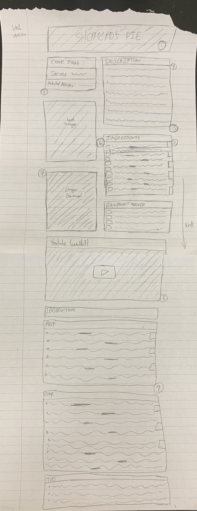
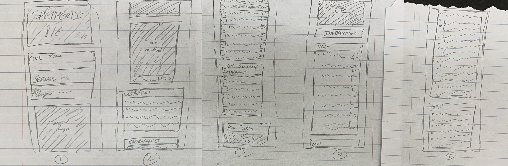

Web Wireframe

Mobile Wireframe

notes(reference web wireframe)
- Background for title is a semi-transparent background image of a shepherd's pie
- Shows 3 most relevant pieces information quickly
- Description should fully fit in box - which will be a slightly darker color than the background color
- Each section has a title with a bar similar to windows on a computer
- Sliders on the side that open when bolded words in ingredients -and instructions- are clicked. Sliders are relevant for substitutes or side notes - to make text more concise.
- Checkboxes on left side for user to check off ingredients that they have
- Image carousel featuring images that people have made from this recipe - variations to inspire ideas
- Tutorial video explaining how to make shepherd's pie
- Sliders present for prep and cook steps.